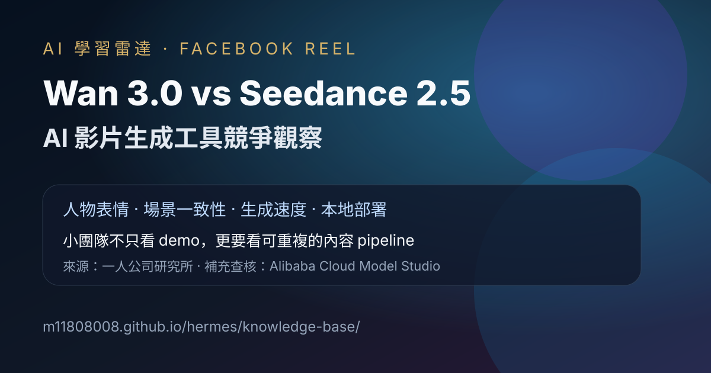

Facebook Reel｜一人公司研究所：Wan 3.0 對決 Seedance 2.5，AI 影片工具競爭觀察

一句話摘要
一人公司研究所分享 Facebook Reel，主題是阿里千問 Wan 3.0 與 Seedance 2.5 的 AI 影片生成效果比較，整理人物表情、場景一致性、生成速度與開源／本地部署等觀察。本文保存貼文重點，並補充官方 Model Studio 對 Wan3.0 的定位：可由文字、圖片、音訊、影片與文件生成 30 秒影片；實際可用性、授權與效果仍需以官方入口與當下模型版本為準。
來源脈絡
- 來源：Facebook Reel「一人公司研究所」。
- 分享連結：https://www.facebook.com/share/v/1MG1A59SBE/
- Canonical：https://www.facebook.com/reel/2184421035748903
- 可見互動數：約 890 個心情、37 則留言、292 次分享。
- 注意：本文保存公開頁面可見貼文與畫面資訊；影片本體未做完整逐字稿辨識，工具比較仍需以官方文件與實測為準。
貼文重點整理
貼文主題是「AI 影片生成又要變天了」，以阿里千問 Wan 3.0 與 Seedance 2.5 的效果對決作為切入點。可見文字整理了幾個觀察：
- 畫質細節：Wan 3.0 在人物表情與場景一致性上有明顯進步。
- 生成速度：相較前代更快，對小團隊與一人公司尤其重要。
- 開源優勢：可本地部署，不必完全綁在單一平台。
- 成本結構：以前商業級廣告常需外包團隊與高預算，現在創作者可用一台電腦低成本驗證想法。
為什麼值得歸檔
這則 Reel 的價值不只在「哪個模型比較強」，而是反映 AI 影片工具正在進入多供應商競爭階段：閉源平台提供快速產品化與雲端體驗，開源／可部署模型則提供可控性、成本彈性與工作流整合空間。
對一人公司或小型內容團隊來說，接下來評估 AI 影片工具時，不應只看單支 demo 的視覺震撼，而要同步評估：
- 角色一致性是否能支撐連續廣告或品牌角色。
- 生成速度與批量測試成本是否適合日常內容節奏。
- 是否支援本地部署、API、自動化或私有素材處理。
- 商用授權、素材來源、人物肖像與品牌安全是否清楚。
官方查核補充：Wan3.0 的定位
Alibaba Cloud Model Studio Blog 對 Wan3.0 的公開描述是：Wan3.0 可從文字、圖片、音訊、影片與文件（PPT、PDF）生成 30 秒 AI 影片，並標示 API pricing from $0.05/second on Alibaba Cloud Model Studio。
這表示貼文提到的「可本地部署／開源優勢」仍需要進一步對照實際釋出的模型權重、授權條款、硬體需求與部署入口。若要用於課程或商業專案，建議把它視為「值得追蹤的新模型訊號」，而不是尚未驗證的既定結論。
對 AI 學習雷達的觀察
- AI 影片市場正在從單一爆款模型，走向「多模型比較＋場景化選型」。
- 小團隊真正需要的是穩定、可重複、可批量的內容 pipeline，而不只是一次性 demo。
- 開源或可部署模型若成熟，會讓品牌素材、內部知識、長期角色設定更容易進入私有工作流。
- Seedance 2.5、Wan 3.0、Veo、Kling 等模型的競爭，會把評估重點推向 reference control、長片段一致性、音畫整合與 API 成本。
原文整理
AI影片生成又要變天了！
阿里的千問Wan 3.0最近釋出，效果拿來跟Seedance 2.5正面對決，結果讓人意外——
幾個重點整理：
- 🎬 畫質細節：Wan 3.0在人物表情和場景一致性上進步很多
- ⚡ 生成速度：比前代快了不少，對一人公司來說時間就是成本
- 🆓 開源優勢：可以本地部署，不用綁在某家平台
對我們這種小團隊來說，AI影片工具的選擇越來越多，競爭越激烈我們越受益。
以前做一條商業級廣告要找團隊花幾萬塊，現在一個人一台電腦就能搞定。這不是取代創意工作者，而是讓每個人都有機會用低成本驗證自己的想法。
你用過哪些AI影片工具？留言分享一下！
@影片來源：B站 華師沈威
#AI影片生成 #千問Wan3 #Seedance #一人公司 #AI工具 #開源AI #效率提升
原始連結
Facebook 分享連結：
https://www.facebook.com/share/v/1MG1A59SBE/
Facebook canonical：
https://www.facebook.com/reel/2184421035748903
官方補充來源：
https://modelstudio.alibabacloud.com/intl/blog/wan3-ai-video-generation-model/